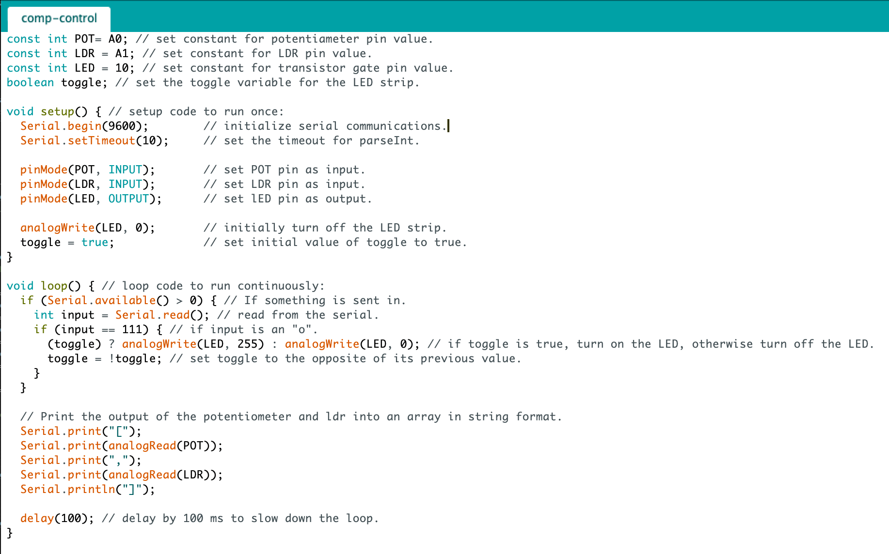

Schematic
In this circuit, two potential dividers are used to measure the voltage drop offs from the potentiometer and the LDR. The measurements for R1, R2, and RB are shown below.
Prompt: Create a webpage with p5.js that interacts with data that’s coming to from and from your arduino over serial. You must have at least 2 input devices from the arduino and one output that uses a transistor.

For this assignment, I implemented a potentiometer that allows the user to adjust the color on the screen, a light sensor that tells a webpage the lighting conditions of a room, and a LED strip that can be toggled on and off using the "o" key on the keyboard if the room is too dark. This is done using the p5.js framework and its serial library. The screen displays the lighting condition of the room (e.g. "The room is bright", "... well lit", "... dim", and "... dark").
Schematic
In this circuit, two potential dividers are used to measure the voltage drop offs from the potentiometer and the LDR. The measurements for R1, R2, and RB are shown below.
Resistance Calculations
The calculations for R1 is the same as that of Assignment 3 since the same circuit is used. The calculations for R2 is the same as that of Assignment 4. The calculation for RB is the same as that of Assignment 6 (refer to A6 for further explanation).
Arduino .ino File

Sketch.js File
The sketch.js file shows the programming used to process the serial data. The potentiometer and LDR values are parsed via JSON.parse function into an array thenn mapped to a 0-100 range. Custom hues and brightness levels are set for different intervals.
During the data retrieval process (see try catch section), it is noted that the retrieval rate of the browser is much faster than the transmission rate of the arduino, resulting to several null strings between valid data strings. A way to combat this is to have an old data array that keeps track of the previous valid data. In that sense, if the incoming data string is empty, use the previous data, otherwise update the incoming data as the new datain and the old data array as well.
Console
The arduino inputs are printed onto the browser console using the "console.log()" function to check if there is a connection. Note that there are no empty arrays since it is taken care of by keeping track of and reusing the old data (when the data string is empty).
Circuit